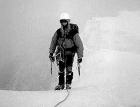
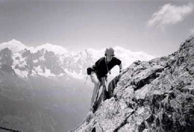

It was New Year's day, and we were in the Northern Highlands. The two of us can't have had enough to drink the night before, for we were ready and keen when most of Scotland would be in bed for many more hours (in fact, Toby hadn't had any drink at all, since he didn't arrive at the bothy until after 1am). Together with half a dozen fellow climbers, we set off sometime around 6 o'clock that morning,with the intention of climbing "Deranged", a grade III gully on Beinn Dearg Mhor.
The walk-in was lengthened noticeably by the need to cross two wide rivers early on. They weren't sufficiently shallow to wade carelessly, nor were they sufficiently frozen to walk across the surface. Instead, it took careful route-finding to pick a way across at the shallowest point. Two hours of steep, heathery slopes followed before we found ourselves in Coire nan Clach.
The apparent lack of good winter conditions now left most of the group bouldering on a well-formed waterfall in the basin of the corrie. Most, but not all, of the group. We were the exceptions, for we were just not interested in spending all day top-roping the same patch of ice - no, we wanted to feel that we were actually climbing somewhere and get to the top of the mountain, even if it did mean poorer quality ice.
The others watched us almost with a sense of pity as we set off, but probably smugness too, in the thought that we would turn back soon enough. Lizzie felt in her heart that we would not be able to even start it, which eased the nerves she had had at the thought that we were about to climb something at the limit of both our ability and our experience.
We struggled up the boulder slope to the foot of the gully. It was difficult going, over slippery snow-covered rocks, none of which seemed keen to stay in one place. But when we reached the crag's yawning mouth, our spirits were lifted by the sight of a beautifully formed section of steep ice at the back.
"It looks like it's in nick!"
"Just as well - I don't fancy going back down that bloody boulder slope again!"
What we could see was ideal climbing ice. Surely it must be like that all the way up? With renewed confidence, we delicately stepped into harnesses and tied onto the rope.
This was to be Lizzie's first real lead, and she had little confidence in her ability to place protection; Toby, belaying, anchored himself with about three ice-screws, just in case. Thus, Lizzie was given a sense of security as she set off to probe higher - a security that wasn't to be matched until returning to the bothy many hours later. Out in front, making the decisions, she was climbing in a rhythm and feeling fantastic. The ice was deep and sound, almost grabbing the picks of her tools and the points of her crampons.
One pitch later, though, things had changed. It was now Toby's lead, and he had reached a constricted point in the gully where it was clear that the route should go out right. However, all that remained was a bare rock-walled channel with a slushy snow floor. He set up the best belay he could manage, but one rather dodgy ice-screw and a barely-inserted pick did not inspire great amounts of confidence in either of us. Lizzie tried to avoid the obstacle by climbing out left, which simply led her out of the frying pan and into the fire (or, perhaps, out of the fridge and into the freezer?). She now found herself committed to climbing a steep bulging ice step.
Frantically driving her axes into it, desperate to reach the ledge she could see a few feet above, she was rewarded only with a precarious perch on a dubious tuft. Bare rock loomed above; the move rightwards, back into the gully was unthinkable without solid gear. When she shouted down to Toby, she couldn't keep the tremble of fear out of her voice.
She looked around her, examining every rock and every runnel of ice. Where could she anchor to, to bring Toby up and plan their next move? There was a small patch of clean ice at full stretch on the left, and frantic scrabbling with an screw eventually got it to bite. It only went in half its length before it bottomed out, so she tied it off, trying her utmost not to disturb what was a somewhat dubious placement. Driving her axes blindly into an overhanging piece of turf above, she called down.
"Climb when you're ready! And don't fall off, for God's sake!"

Amos at the top of Green Gully, Ben Nevis
Photo: Amos Preminger

Sheila in the Alps
Photo: Matthew Brown
She braced herself as Toby began to climb.
"Shit ... shit ... SHIT!" Understandably, Toby was having some difficulty on this pitch. Lizzie nervously stared down the gully, expecting at any moment to feel the pull which would whip her off her precarious stance. Why do we allow ourselves to get into these situations?
Somehow he made it up to the stance without incident. Looking at Lizzie's anchors, he felt a wave of relief that he hadn't fallen - it was already a considerable distance to the floor of the corrie.
Taking over the lead, he managed to step down and rightwards over the gully onto its right wall. The void stretched out below; this, coupled with knowledge of the gear, made the step a serious manoeuvre. Now the first priority was to look for gear - any gear at all. But there wasn't anything to be found. There was no ice, only slush, in the gully floor; the side walls were blank, broken only by hairline cracks - none big enough to accept even the smallest gear.
By the time a crack appeared big enough to accept a piton, Lizzie was paying out her last ten metres of rope. The peg went in cleanly, ringing loud in the echoing confines of the now almost ice-free cleft. When we were reunited again at the stance, the realisation was slowly dawning that we no longer had the option of backing off the route. Neither of us could contemplate descending from anchors that offered only psychological protection. The only way was up.
Until now, we had been to preoccupied with the climb's difficulties to notice the time. However, we began to notice the light failing. With no real idea of how many pitches lay above us, we knew only that we couldn't afford to stop anywhere. We climbed at maximum speed, with no runners at all, for several pitches pitches (who knows how many? - it was all a dazed blur to us both). Thankfully, we were by now on easier-angled snow slopes, with occasional rock anchors for belays.
The last stance was not even anchored; Toby just walked the rope around a boulder on the summit ridge, relying on the friction to hold a fall. By this time, the gloaming was well upon us: the rope was well nigh invisible where it passed over rock, only apparent where it had a background of snow.
It was only a hundred metres to the summit of the mountain, but we both knew that the situation was too serious to waste even the ten minutes it would take to reach the top. We would be making the entire descent by torchlight, and the sooner we moved downwards, the better.
We also knew we had no map, having mislaid it somewhere in the bothy in the chaos of Hogmanay. Still, that wouldn't be a problem: Toby at least had been on this hill twice before in summer conditions, and knew the lie of the land, where the drainage and watersheds are, and so on.
That didn't lessen our surprise when we saw a crevasse across our path. Surely we couldn't be on a glacier? Not in Scotland! Closer inspection revealed that it was, in fact, a deep gash in the hillside, which had to be circumvented above. Only a few metres ascent, but at this stage we only wanted to go downwards, and tired limbs complained at the exertion.
Toby's torchlight was a feeble yellow colour; we didn't hold much hope for it lasting the descent. Sure enough, within ten minutes it had gone completely. So we still had over 2500ft to descend in the dark, with no map, and only one torch between us! Our plan, such as it was, was to head east; a steep slope lead down into the deep U-shaped Gleann na Muice, and by the river at the bottom ran a good stalkers' path leading almost to the bothy.
From close up, the slope was certainly a lot steeper than it looked from the bothy; every so often there were small rock steps to negotiate. In between these, there was thick heather, which clutched at our crampon points in a determined effort to upend us. We couldn't take crampons off, though, because of the third element of the nightmare - glassy frozen burns interrupted our route at random intervals. A slip on one of those would mean broken bones. So the crampons stayed on.
As we descended, Lizzie's headtorch began to waver. Soon it was too weak to use, and we turned it off, conserving the little remaining power for the most difficult bits. As we reached the floor of the glen, tricky bits became more frequent. A maze of solid ice rivulets meandered crazily through the land, causing us to have to tumble up and down their banks in the dark. It was a frustrating experience.
Looking down the glen to where the bothy should be, we could see a light. Obviously, it must be that of someone staying there, but why were they outside for so long? I was certain that there were no windows facing us (we were approaching from the same direction as the prevailing wind). It didn't make any sense.
It's hard to say how we managed the walk across in the dark. It seemed an eternity to reach the first of the two rivers. Holding onto each other simply to stay upright, we staggered across the storm-tossed ground, stumbling from one grassy tuft to the next, periodically tumbling as the heather grabbed out feet again.
Crossing the river was achieved with much less finesse than in the morning. Not even stopping to remove our crampons, we simply waded across the rocky bottom, still using each other for balance. Only half a mile to go now! But the spit of land between the two rivers seemed to have grown since the morning. Sporadically we would crash to the ground together, as we simultaneously "discovered" the same two-foot deep channel across our path.
The second river was dispatched with as much disregard as the first, and we were on the home leg. As we approached, the mystery of the light became clear: one of the other climbers had placed his torch outside on a stone wall to guide our return. This it had done in perfection. No matter that they thought our problem was the lack of a map, they led us home safely.
Our welcome was thorough. The fire was lit, and we simply collapsed in front of it. Someone cooked us dinner - I was too tired to notice who - and we struggled to keep our eyes open for long enough to eat it. The time was 9 o'clock - we had taken five hours to walk out from our route.
Deranged? We certainly were.